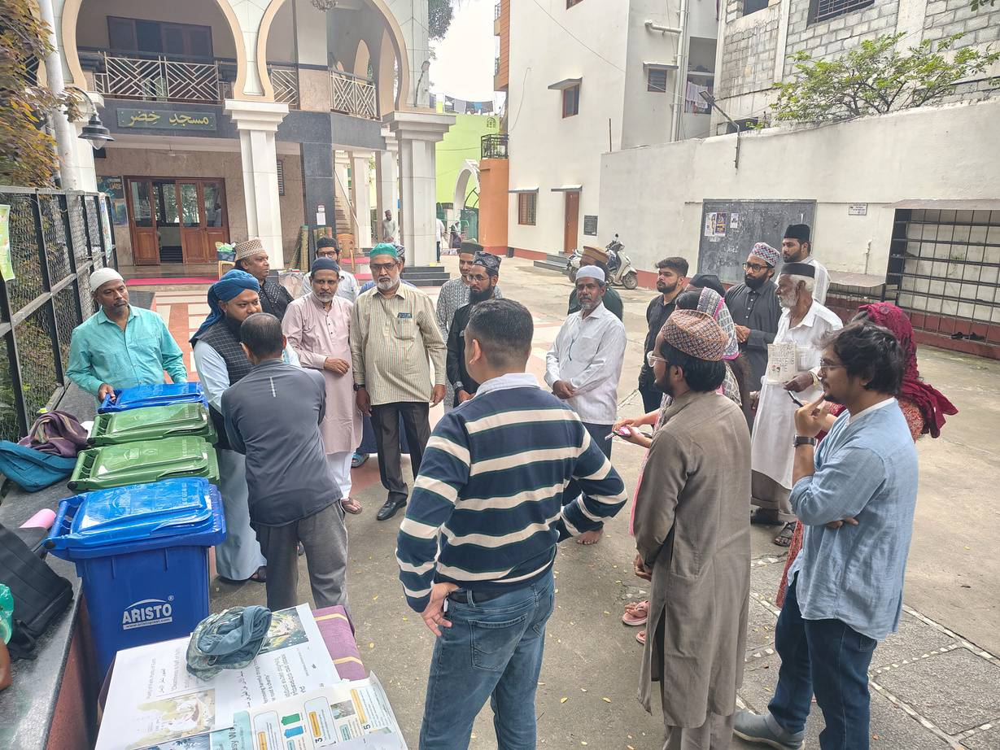
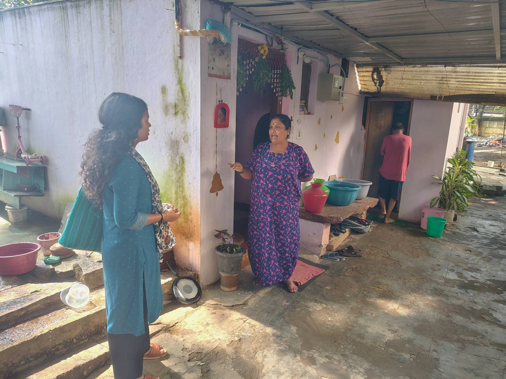
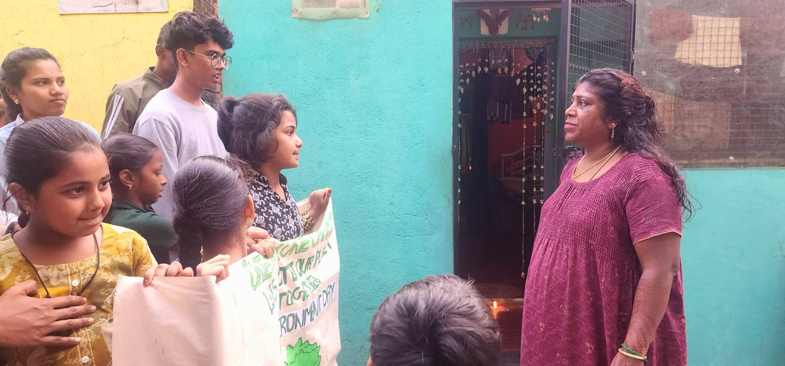
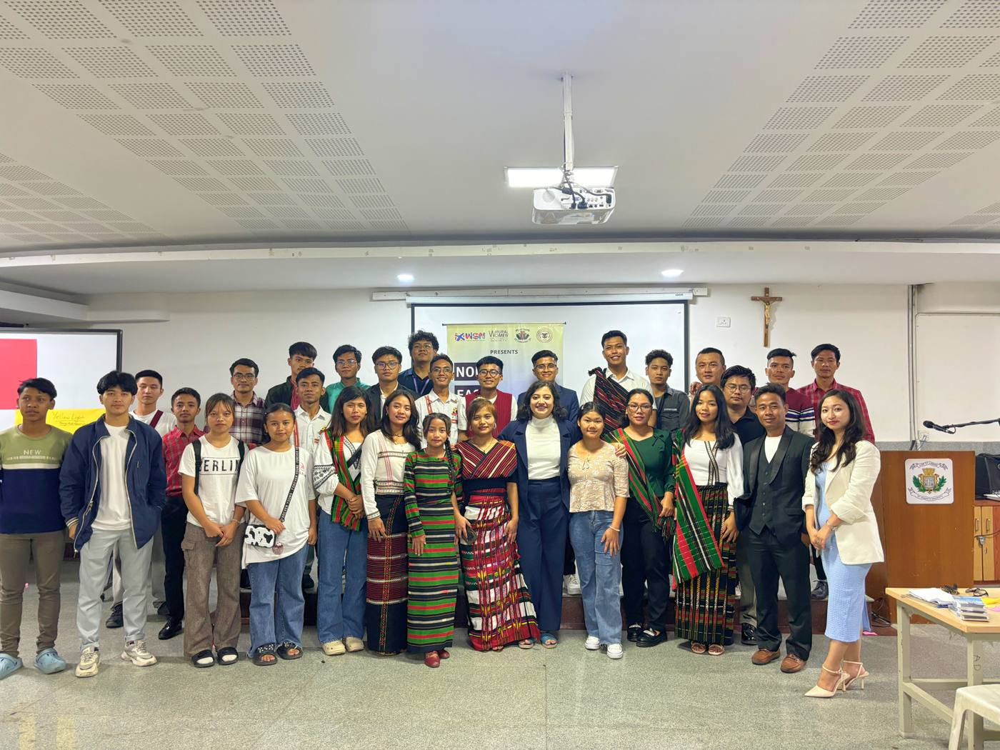

Youth Leadership · Youth Climate Champion · 2023
Youth Leadership · Youth Climate Champion · 2023From saving trees to leading climate action
Mayur, a biology student, surveyed his community and led workshops on waste and deforestation, finding that welcoming women in was the key to getting everyone involved.
MayurRead the story → Youth Leadership · Youth Climate Leader
Youth Leadership · Youth Climate LeaderFrom helpless to leading change
Deekshitha led door-to-door campaigns, bin distribution, wall paintings and follow-up monitoring in KSRTC Colony, and grew into a confident community organiser.
DeekshithaRead the story →
Youth Leadership · Youth Climate LeaderClimate action through trusted spaces
Mohammed designed lively sessions in faith spaces and youth groups, clearing up long-standing confusion about wet and dry waste.
MohammedRead the story → Youth Leadership · Community mentor, Need Base India
Youth Leadership · Community mentor, Need Base IndiaBuilding changemakers
Ashlesh, who works with children and young people at Need Base India, mentored youth teams to deliver waste awareness in KSRTC Colony.
AshleshRead the story →
Youth Leadership · Resident and community supporterA colony we are proud of
Lakshmi, a resident for over 25 years, joined the youth campaign and now helps neighbours with follow-ups and tends the new plantation.
LakshmiRead the story → Youth Fund · Phase 1 · Climate education
Youth Fund · Phase 1 · Climate educationPlay, learn, act
Young people designed contextual board games that link floods, heat and drought to their own neighbourhoods, now used in schools and community meetings.
ATREERead the story →
Youth Fund · Phase 1 · Water, health and climateFrom helplessness to action
Residents traced rashes and illness back to their water supply and learned to take it up with the ward, through tools co-designed with the community.
SOCHARARead the story → Youth Fund · Phase 2 · Plastic-free, waste-wise communities
Youth Fund · Phase 2 · Plastic-free, waste-wise communitiesFrom awareness to enforcement
A youth climate team brought together awareness, BBMP marshals and paper-bag training so shopkeepers in Gandhinagara moved away from single-use plastic.
Makkala JagritiRead the story → Youth Fund · Phase 2 · Agroecology
Youth Fund · Phase 2 · AgroecologySeeds of change
Nagendra, a young farmer in H.D. Kote, Mysuru, took up soil health, intercropping and vermicomposting. Within nine months his yields rose and neighbours began to follow.
Pipal TreeRead the story → Youth Fund · Phase 2 · Regenerative farming
Youth Fund · Phase 2 · Regenerative farmingFrom maize fields to climate-resilient futures
Laxmi, a 25-year-old student and farmer, turned an acre of failing maize into a diverse tree-based plot with drip irrigation backed by the Horticulture Department.
SCOPERead the story →
Youth Fund · Phase 2 · Civic actionNorth East Youth Civic Engagement
Students from North Eastern communities in Bengaluru built inclusive spaces on campus and stepped up as organisers and leaders.
White Dot Solidarity NetworkRead the story →